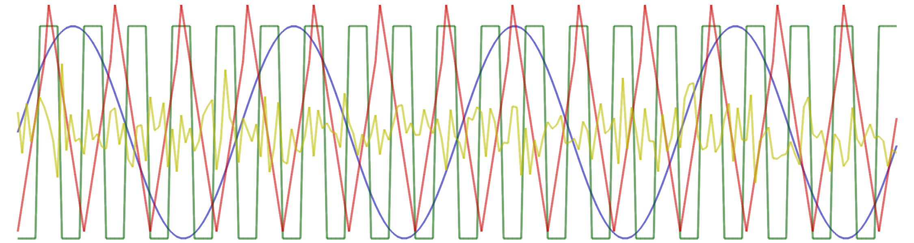

Génération de signaux

#include "tsd/tsd.hpp"
Sont regroupées ici quelques fonctions pour générer des signaux (signaux périodiques, aléatoires, ou intervalles).
Structures
struct OHConfig
Configuration oscillateur harmonique.
struct OLUT
Fonctions
static auto linspace(float a, float b, entier n)
Intervalle de points équidistants.
static auto logspace(float a, float b, entier n)
Intervalle de points logarithmiquement équidistants (suite géométrique).
static Veci intervalle_entier(entier a, entier b)
Intervalle entier.
static Vecf intervalle_temporel(entier n, float fe)
Intervalle temporel de \(n\) échantillons, en fonction de la fréquence d'échantillonnage.
static Vecf intervalle_temporel(float T, float fe)
Intervalle temporel de durée \(T\), en fonction de la fréquence d'échantillonnage.
Vecf randn(entier n)
Loi normale (vecteur colonne).
Veccf randcn(entier n)
Loi normale complexe (vecteur colonne)
Vecf randu(entier n, float a=-1, float b=1)
Loi uniforme (vecteur colonne).
Vecb randb(entier n)
Loi aléatoire binaire.
Veci randi(entier M, entier n)
Loi aléatoire catégorielle.
entier randi(entier M)
float randu()
Loi uniforme (calcul d'un seul élément)
float randn()
Loi normale (calcul d'un seul élément)
Veccf sigexp(float f, entier n)
Calcul efficace d'une exponentielle complexe.
Vecf sigsin(float f, entier n)
Calcul efficace d'une sinusoide.
Vecf sigcos(float f, entier n)
Calcul efficace d'un cosinus.
Vecf sigtri(entier p, entier n)
Signal triangulaire (périodique).
Vecf sigcar(entier p, entier n)
Signal carré (périodique)
Vecf sigimp(entier n, entier p=0)
Impulsion discrète.
Vecf sigscie(entier p, entier n)
Signal en dent de scie.
Vecf siggsin(float f, entier n, float a=10)
Sinusoïde modulée par une Gaussienne.
Vecf siggauss(entier n, float a=10)
Impulsion filtrée par une Gaussienne.
Vecf sigchirp(float f0, float f1, entier n, char mode='l')
Chirp linéaire ou quadratique.
Vecf signyquist(entier n)
Signal à la fréquence de Nyquist (-1,1,-1,1,etc.).
sptr<Source<cfloat, OHConfig>> source_ohc(float freq)
Génération d'un signal exponentiel via un oscillateur harmonique.
sptr<Source<float, OHConfig>> source_ohr(float freq)
Génération d'un signal sinusoïdal via un oscillateur harmonique.